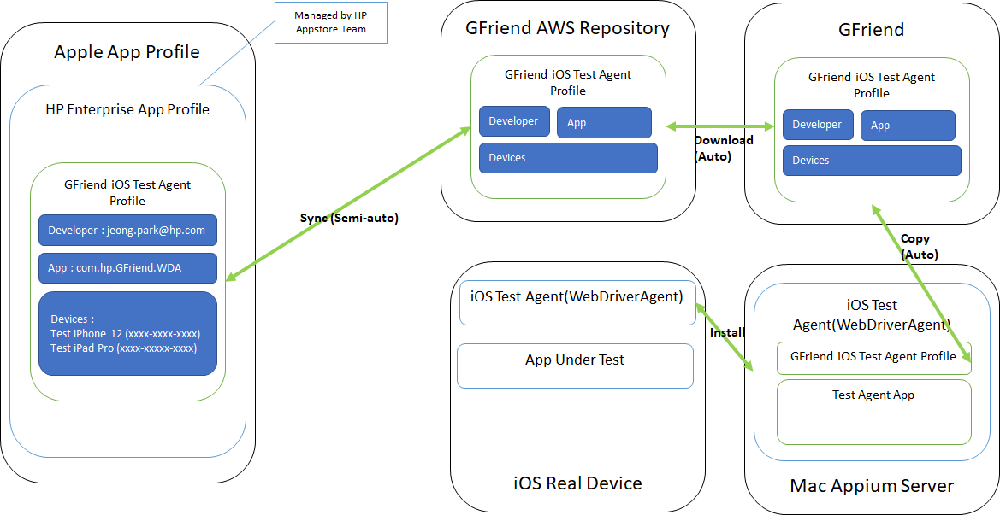
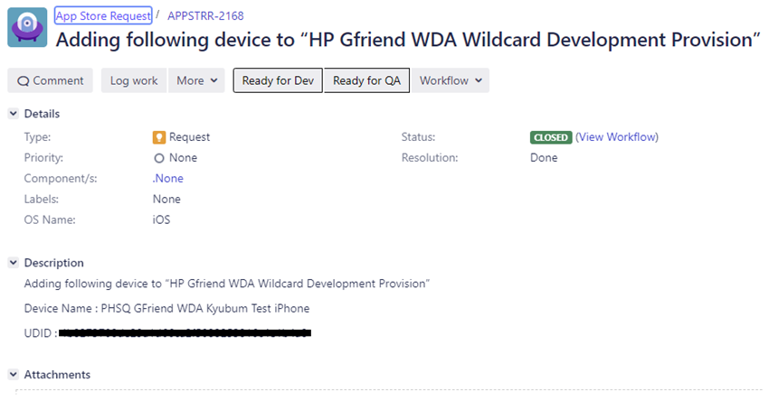
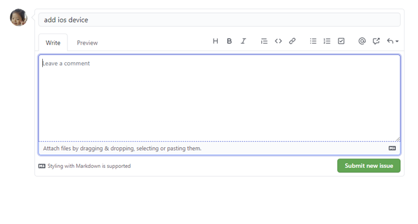
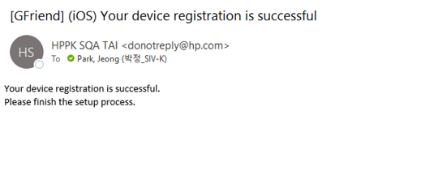
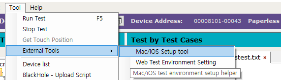
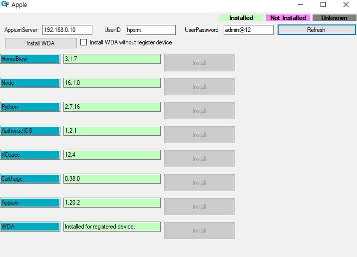

For both iOS and Mac application testing, Mac OSX machine is required to serve Appium server. You can use one Mac OSX machine both for Appium server and test device.
GFriend uses test agent called WebDriverAgent which will be installed in your test phone. Due to strict policies of Apple, this agent only can be installed with registered device. Apple manages mapping information among developers, apps and devices as profile, you need to add your device to GFriend test agent profile.

Unfortunately normal user can not download this updated profiles form Apple site, GFriend setup AWs repository to store this profile. After you device is registered in profile, you can request sync profile between Apple and GFriend AWS repository.
After syncing, now you can setup your environment using environment setup helper tool.
All profiles which is developed by HP, are managed by HP App Store team. To add your device(s) into GFriend Test Agent profile, you have to create JIRA issue.
See example below:

Normally, request is handled within 1 business day.
Precondition : JIRA request of step 1 is done. (Profile updated)
If you create Github issues, sync process will be automatically started.
Go to Github Enterprise WDA Repo : https://github.azc.ext.hp.com/HP-SMT/WebDriverAgent/issues
Create new issue with title of add ios device 
Email will be sent, and issue will be closed if sync is done 
To setup Appium server with setup helper tool, you need follow below steps first:
Enable ssh & disable sleep
Install Xcode (in Mac)
or you can install Xcode via AppStore
Enable for Accessibility access for Xcode Helper for Mac testing (in Mac)
Helper tool (Apple.exe) support to install all dependencies for Mac/iOS testing. You can run this tool in GFriend menu.

You can install all required component for Mac/iOS test.

NOTE : All other component except WDA can be installed before registering device. WDA must be installed after registering device and syncing profile.